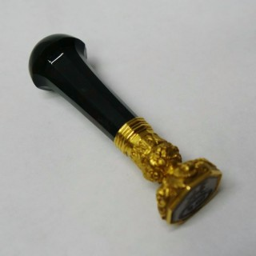
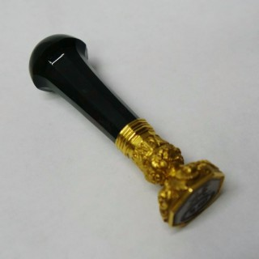

Po 30 ročných skúsenostiach pri zostavovani rodokmena si myslim, ze pre zníženie finančných nákladov je najlepsie začať realizovať rodokmeň v dvoch etapach. V prvej etape by bolo vhodné sústrediť sa predovšetkým na pátranie a hľadanie dokumentov po predkoch, na rodné listy a sobášne listy. Tie vám poskytnú dátumy narodenia a krstu, dátumy sobášov, dátumy úmrtí, povolania predkov, choroby na ktoré zomreli, a vek úmrtia predchádzajúcich generácií. Vyhnete sa tak genealogickemu výskumu v archívoch, ktorý je pre amatéra časovo veľmi náročný a možno aj s minimálnym výsledkom.
Pátrať v cirkevných matrikách písaných v latinčine do 19-storočia, neskôr v maďarčine je náročná práca aj pre skúseného profesionálného genealóga. Svoje pátranie by bolo preto vhodné začať u starých rodičov. Postupne navštevovať ich súrodencov, hlavne tých, ktorí ostali bývať v rodnom dome po prarodičoch. Je vysoko pravdepodobné, takmer pravidlo, že všetky doklady zostali v dome, kde žili predchádzajúce generácie.
Druhou možnosťou je, že doklady po predkoch sú u tých deti, ktoré v danej rodine dosiahli najvyššie vzdelanie. Zdrojom informácií sú samozrejme cintoriny a miestne farske úrady, odkiaľ pochádzajú predkovia. Ak sa Vám podarí získať rodný list predka z r. cca 1910, v rodnom liste, sobášnom liste získate informácie o predkoch narodených cca 1880.
Je dôležité povedať aj to, že rodné listy sa v Uhorsku začali vydávať až od roku 1900. Týmto spôsobom som postupoval aj ja a myslím si, že po 30 rokoch patrania to bolo správne rozhodnutie. Pri pátrani po orginálnych dokumentoch, fotografiach, informáciach hra čas proti vám. Stále zomierajú vzdialeni príbuzni, s ktorymi odchádza aj množstvo dokumentov, informácií, ktoré častokrát pozostali vyhodia hneď na druhý deň po pohrebe nebohého – osobná skúsenosť. Po zozbieraní „ všetkých dokumentov“ sa tu vaše pátranie končí.
Informácie v archívoch môžete získať aj o 20 rokov neskôr, po ukončení prvej fázy. Cesta je zdĺhava, náročná, vyžadujúca si obrovskú trpezlivosť, ale výsledok a radosť po dokončení je adekvátna vynaloženej námahe. Obetoval som tejto téme roky, ale neľutujem, malo to zmysel. „ Je lepsie mat papierovu krabicu plnu dokumentov, ako zlatu truhlicu ale prazdnu.“ Ďakujem.
Viliam Brindzák
vbrindzak@hotmail.co.uk 
